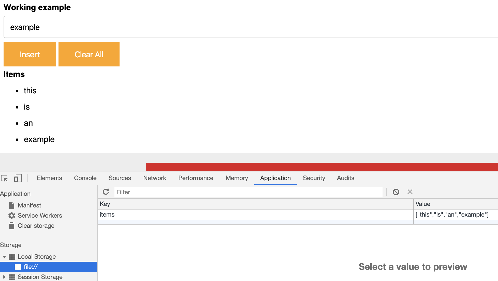

Local storage is data stored in the user's browser (yes, his name doesn't allow confusion). In oposition to the cookies, it doesn't is included on the request, so it make it lighter but you are not aware of what's actually stored.
You can debug your localStorage using the Developers Tools at Chrome
